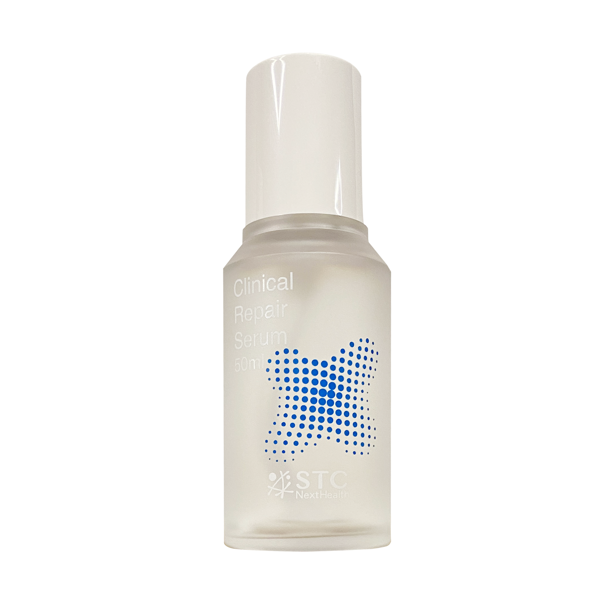

01 / ORIGIN
原料的起點
花蓮東豐拾穗
STC NextHealth 的米糠保養故事，起於花蓮東豐拾穗農場。選擇在地原料，是我們建立配方故事的第一步，也讓日常保養與臺灣的土地有了具體的連結。
米糠是稻米碾製時取得的外層部分。我們選用源自東豐有機米糠的發酵原料，結合酵母發酵與萃取開發，將米糠的應用延伸至肌膚保養。對我們而言，原料來源與配方搭配同樣值得細心對待。

田野與製程為品牌概念示意，並非農場現場實拍。
02 / DEVELOPMENT
米糠的保養應用
以米糠作為發酵原料，經酵母發酵與萃取開發，搭配適合的保養成分，形成日常使用的配方。
01米糠原料
源自東豐拾穗有機米糠。
02酵母發酵
開發米糠酵母發酵濾液。
03保養配方
搭配保濕與舒緩乾燥的成分。

03 / DAILY CARE
精粹修護精華
科學的角色，是把原料的特色轉化為日常可以使用的配方。精粹修護精華結合米糠酵母發酵濾液、銀耳萃取與尿囊素，為肌膚補充水分，舒緩乾燥造成的不適，維持柔嫩細緻的膚觸。
每一次保養，都可以從了解成分與正確使用開始。STC NextHealth 讓東豐米糠的故事走進每日保養，以保濕與肌膚舒適為出發點，陪伴日常的細緻照顧。
查看配方與使用方式 →